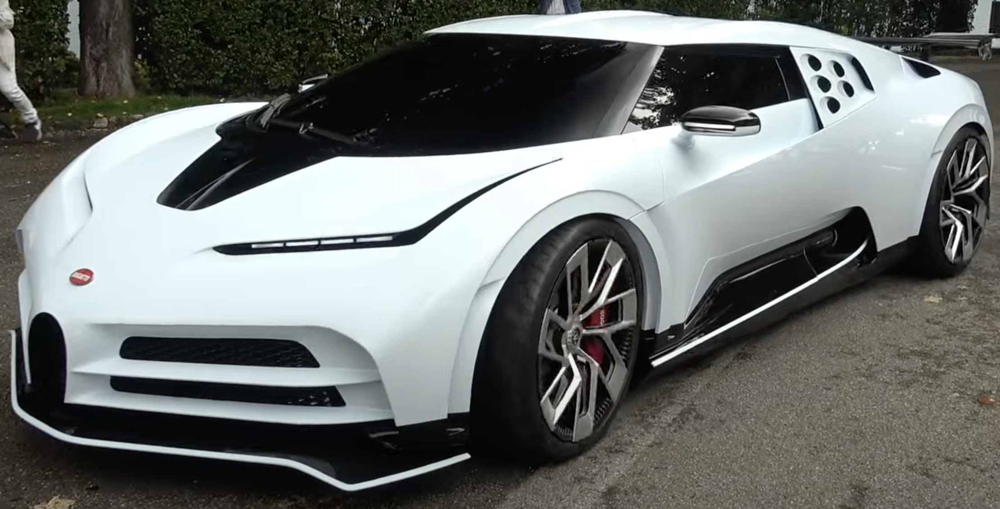

Bugatti Centodieci

The Bugatti Centodieci (Italian for "110")[3] is a limited production mid-engine sports car produced by French automotive manufacturer Bugatti. The car is a homage to the Bugatti EB 110 and a celebration of the Bugatti marque's 110th birthday. It was revealed on 16 August 2019 at "The Quail – A Motorsports Gathering" in California, United States.[4] The Centodieci is 20 kg lighter than the Bugatti Chiron, and has an 8,000 cc (8.0 L; 488.2 cu in) quad-turbocharged W16 engine, rated at 1,176 kW (1,600 PS; 1,578 hp)
at 7,000 rpm. Production of the Centodieci was limited to 10 units priced at €8 million (approximately $10 million at the 2019 exchange rate) each.
Design
Based on the Chiron, the car takes design cues from the EB 110 such as the five round air intakes which resemble a diamond and the wedge shaped design language.
A small horse shoe radiator grille present below the headlamps further harks back to the EB 110. Narrow headlights with LED daytime running function and sharp
grooves are used to create an aggressive appearance. The rear consists of eight tail lights along with matt-black quad exhaust pipes placed on either side of a
large diffuser, complete with an underbody spoiler and a fixed overhanging rear wing. Due to the use of computer assisted 3D design techniques and the use of Virtual
Reality technology, the design team was able to complete the design of the Centodieci in six months.[8][9][1] Compared to the Chiron, the Centodieci is fitted with an
additional air intake near the oil cooler and an engine bay cover manufactured from glass.
Performance
The Centodieci is capable of accelerating from 0-100 km/h (62 mph) in 2.4 seconds, 0-200 km/h (124 mph) in 6.1 seconds and 0-300 km/h (186 mph) in 13.1
seconds with a top speed electronically limited to 380 km/h (240 mph) and has a curb weight of 1,976 kg (4,356 lb).
Production
10 units of the Centodieci were produced for customers, in addition to pre-production and test cars. The Centodieci were hand-built in Bugatti's
Molsheim factory and deliveries to customers started in June 2022
.[3] On 19 December 2022, the tenth and last Bugatti Centodieci was delivered.
GO Back To Main Page